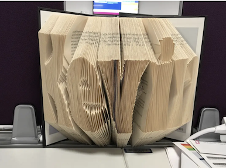
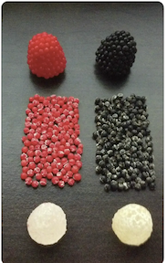

This person drew 29,249 smiley faces in order to see how many they could draw before their pen ran out of ink.

While on the toilet this person person got bored and decided to create an elaborate toilet paper sculture

Kevin got so bored at work that he folded pages in his book to spell out his name

Some people just like to put a cone on their heads to pass the time

This person reached next level bordom so they decided to peal each berry off there candy

Kevin got so bored at work that he folded pages in his book to spell out his name

Some people just like to put a cone on their heads to pass the time
This person reached next level bordom so they decided to peal each berry off there candy


This person reached next level bordom so they decided to peal each berry off there candy

